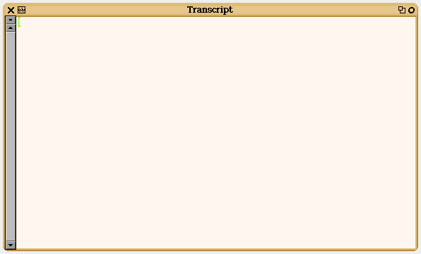

La ventana Transcript es donde normalmente se ven los resultados de las acciones que realiza el sistema.
La ventana Transcript se puede sacar de la solapa o mas conveniente se puede esrcribir Transcript open. como orden en el Workspace antes de probar algún código.

Para ver el resultado la orden es Transcript show:
Ejemplo para verificar.
En el Workspace tipear lo siguiente
Transcript open.
Trnascript show: (24 / 5) printString.
Ejecutar.
Si tenemos un Transcript con mucho texto que deseamos limpiar, la orden es Transcript clear.